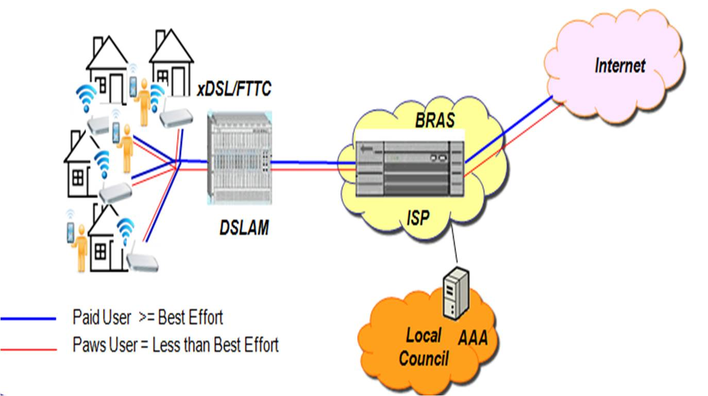

Problem Statement
Digital inclusion is important for social equality to ensure access to the many benefits the Internet offers. These benefits include access to support services and information, cheaper goods, and online communities; and as novel services continue to become available (i.e. the Internet of Things) the consequences of exclusion will continue to grow. The digitally excluded are often elderly, socially excluded, and/or economically deprived. These individuals commonly have low levels of physical mobility (e.g. lack a car) and high levels of reliance on support services, and so have a great deal to gain from Internet access. At the societal level, aside from issues of social justice and equality, the consequences of digital exclusion are economically inefficient offline access to services and a reduction in participation in the Digital Economy (DE).
Whilst amongst the elderly the primary exclusionary factor is cultural (commonly that they do not perceive value in it), amongst younger demographics who want to be online, affordability is cited as the primary barrier, explicitly so by over 40% of digitally excluded 16-44 year olds. The UK Government’s current efforts to address digital inclusion have focused primarily on allocation of £530m to subsidise industry deployment of both ‘superfast’ broadband to urban areas, and ‘standard’ broadband to more remote locations. This approach is predicated on a desire to support novel DE services through improvements in speed for urban users, while simultaneously ensuring basic levels of access for all (e.g. access to critical services such as jobseekers, NHSonline websites etc which do not require high capacity broadband) .
Crucially, this approach addresses infrastructural barriers without addressing economic ones. Pricing is left to the market. However we believe that leaving connectivity for all to be governed by market economics is a major impediment to achieving the full benefits of a DE, and that basic Internet access should be made freely available to all due to its societal benefits, a sentiment recently expressed by Berners-Lee. Many individuals find themselves unable to afford broadband access, unable to pass a necessary credit check, or living in circumstances that are too unstable to commit to lengthy broadband contracts. Indeed, Internet services are increasingly accessed on the move and so current models of “roaming” access provision drive this economic exclusion to a new level, not currently addressed by the push to deploy broadband.
Although there is no single ‘magic bullet’ to remove socio-economic barriers, there are infrastructural solutions that could drastically reduce them. The Public Access WiFi Service (PAWS) project is a first step in this direction: a feasibility study to establish technical requirements and identify the current practices and needs of the digitally excluded. Following successful demonstration, we hope that government policy can be nudged to support industry uptake leading to national deployment.
PAWS Approach
Our research is informing and developing technology to enable
free Internet connectivity to access essential services,
paving the way to new access models. PAWS (Public Access WiFi
Service), is a new Internet access paradigm based on a set of
techniques that make use of the available unused capacity in
home broadband networks and allowing Less-than-Best Effort
(LBE) access to these resources. Case study deployment of this
technology will be underpinned by a programme of social
research which will establish a socio-economic profile of the
area, recruit potential participants and, most importantly,
conduct a longitudinal multi-method assessment of
participants’ current practices and subsequent experiences of
this technology.

PAWS adopts an approach of community-wide participation, where
broadband customers are enabled to donate controlled but free
use of their high-speed broadband Internet by fellow citizens.
Other initiatives have already explored sharing a user’s
broadband Internet connection via wireless (e.g. BT FON).
Although these methods are gaining worldwide acceptance, they
are usually viewed as an extension of a user’s paid service –
accessible only to other customers of the same service. In
contrast, PAWS will extend support free access to essential
services to all. To protect the consumer’s paid service and
the service provider revenue, it is essential to ensure that
the free user traffic does not impact perceived performance of
the bandwidth donor (customer). The PAWS service is therefore
constrained to offer a LBE access to network resources (lower
quality compared to the standard Internet service offered to
paying users). Various methods are being considered, including
enabling LBE in the network.
The project is designed to consider the recent growth of smartphones, as the user interface to many digital applications, and to a lesser degree other common WiFi enabled devices like tablets, laptops and TVs, that the digitally excluded are beginning to access the Internet. Data is limited on this recent phenomenon but it is known that 52% of 16-24 year olds and 23% of Socio-Economic Group C2DE now have smartphones. This proportion is growing rapidly: in both groups, 65% obtained their phone in the last 12 months. This growth is likely driven at least in part by the willingness of parents in low income families to make considerable sacrifices to meet their children’s informational needs. WiFi-enabled Pay-As-You-Go smartphones are now available for £50 and as prices continue to fall it is likely that an increasing proportion of the 86% of C2DE individuals who already own a mobile will switch to a smartphone. PAWS would further accelerate uptake by providing a free, network-independent means of Internet communication.
User Engagement in PAWS
The project seeks to increase user access opportunities, enabling digital inclusion and in turn supporting the UK Government’s ‘digital by default’ programme with its associated cost savings and service improvements. We will explore the benefits offered by our proposed method to both users and network operators. This will consider other important deployment challenges concerning how to manage a “free user base”, e.g. establishing a fair use policy, access control, etc.
Case study deployment of the technology to both urban and rural deployment areas will underpin the programme of research. The project will recruit 50 ‘donors’ (existing broadband users whose routers will provide access points) and 50 ‘users’ (currently digitally excluded) in each deployment area.
The research programme has two strands: socio-economic and technological:
(a) Socio-Economic: The socio-economic strand will establish a picture of relevant urban-rural economic demographics i.e. people who cannot afford to pay for a basic/high speed Internet service; to understand ownership of devices that have the capability to access services, and the user requirements; to evaluate perceptions of the opportunities offered, and ultimately the impact of the project itself. We expect the majority of users will already own a device to access the Internet, but we will also provide 10 users with smartphones during the trial, which will provide additional usage information.
(b) Technology: The technology strand focuses on analysing the technologies required for deployment. We seek to understand the potential networking techniques in the context of how broadband customers use their Internet service and how much unused capacity is actually available within the network. We seek to answer the following high-level questions: How easy is it for an operator (e.g. BT, a project partner) to deploy a LBE service and make it known to potential users? What facilities must we provide regarding registration of users to such a service for regulatory, legal and other reasons (e.g. lawful interception)?
Coordination as the deployment proceeds between the two strands is expected to allow for the rapid identification of social and technical issues, which will then be addressed through responsive implementation. We expect the longer term goals of the work to influence standardization, define best current practice for operators, and influence government policy. There could also be opportunities to pilot new applications and uses of digital technology.